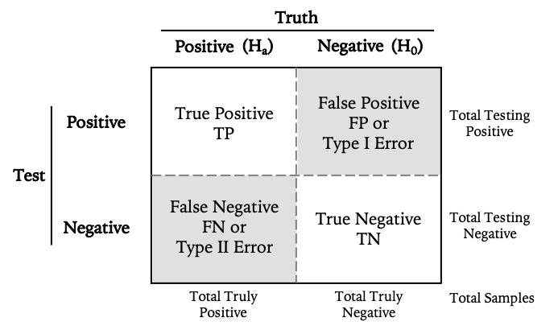
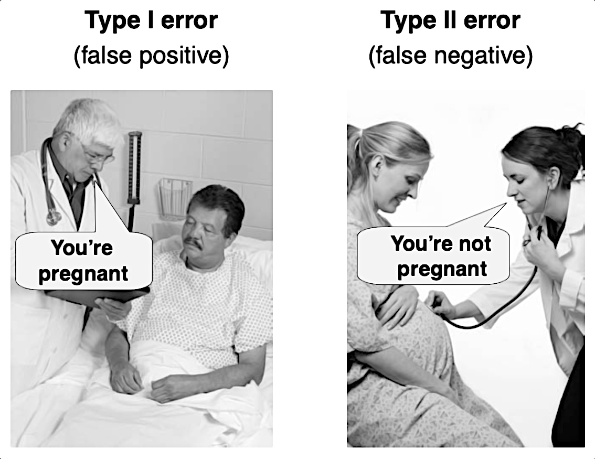
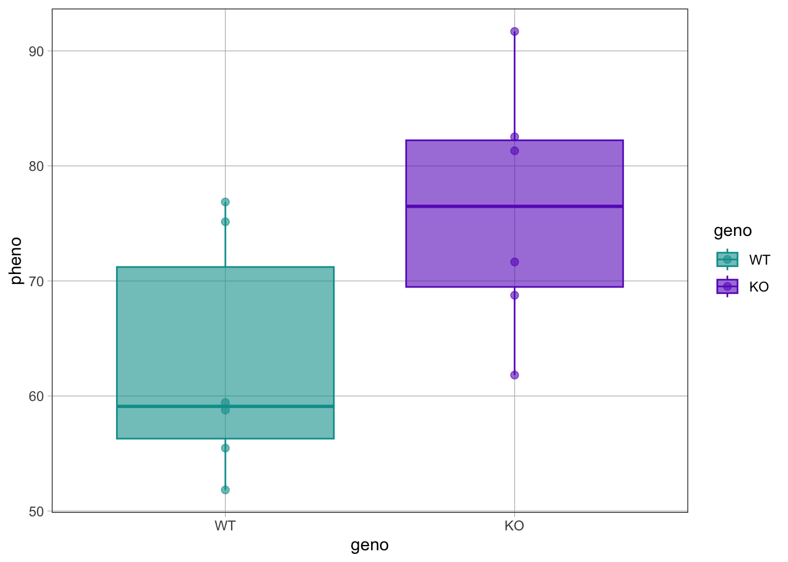
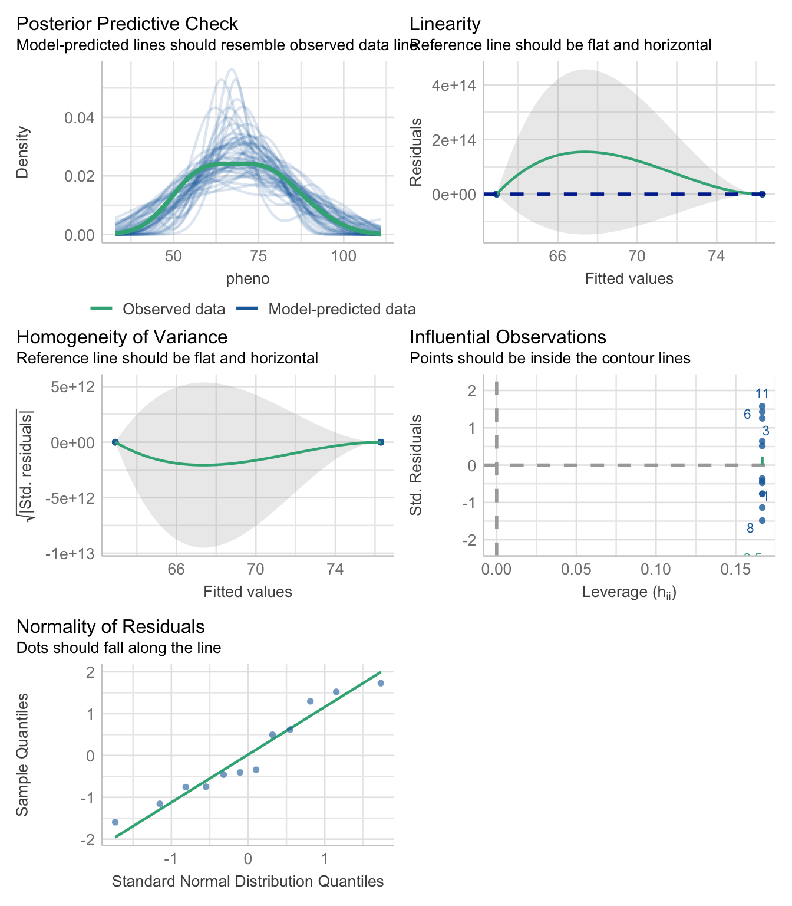
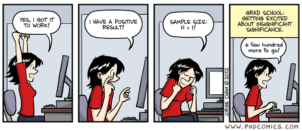
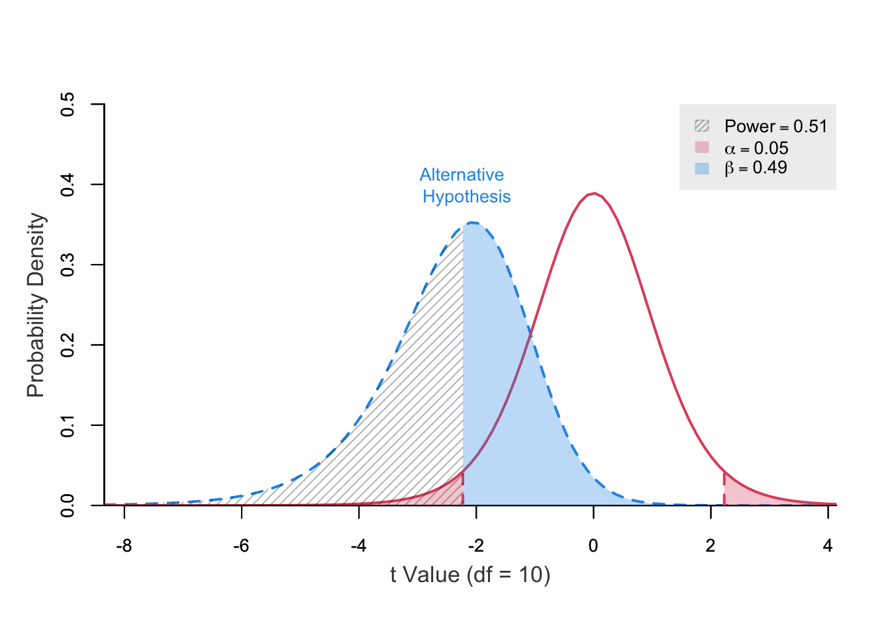
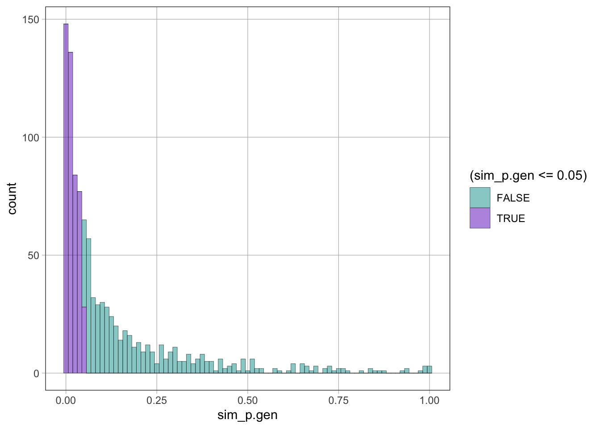
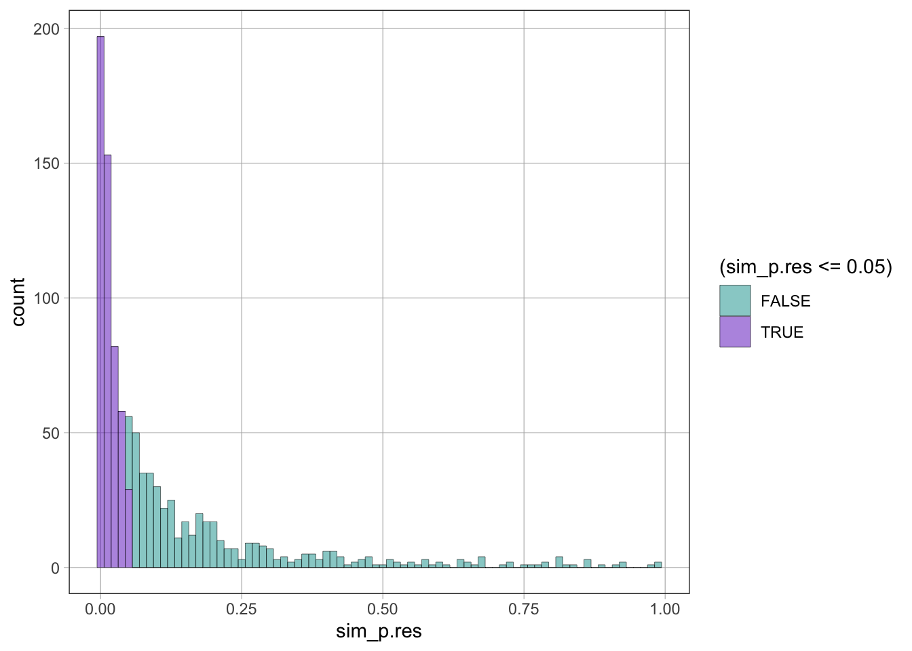
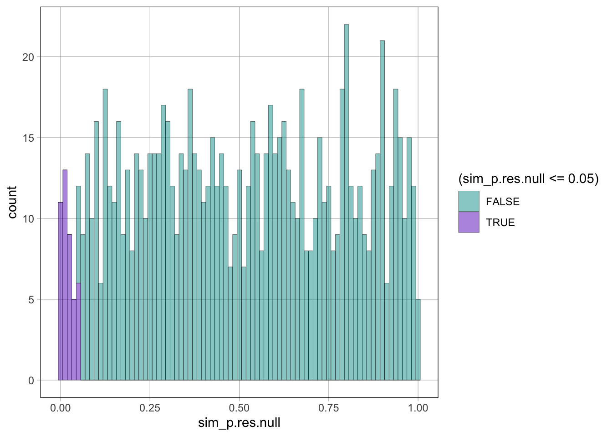
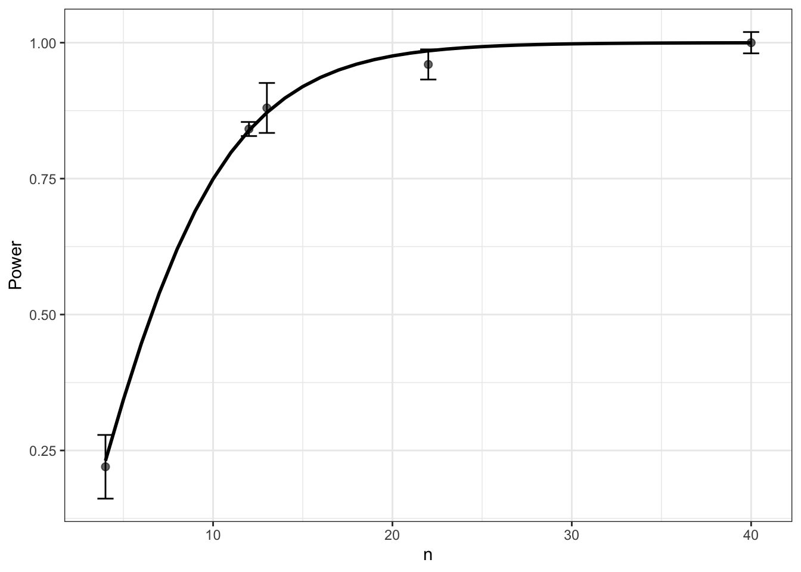

library(tidyverse)
library(coursekata)
library(performance)
library(parameters)
library(effectsize)
library(ggeffects)
set.seed(123)
options(scipen = 0, ggeffects_margin = "empirical")Power analysis using Monte Carlo simulations in R
Introduction
Several R functions and packages (e.g., the built-in stats::power.* functions or the pwr and pwrss packages) as well as desktop (e.g., G*Power,) or web (e.g., powerandsamplesize.com, pwrss, sample size justification) applications are used to perform power analysis of classical null-hypothesis significance tests for simple statistical models and study designs. However, this notebook focuses on the more general approach of using Monte Carlo simulations (Morris, White, and Crowther 2019) and (specifically and more conveniently) the mlpwr package to perform power analysis of significance tests for statistical models and study designs of any complexity (Zimmer, Henninger, and Debelak 2023).
Setup environment
Background information
A-priori power analysis is critical for study design, sample size justification, and the interpretation of scientific claims based on null-hypothesis significance testing (NHST) 😭 (Lakens 2022). In particular, it allows us to estimate the minimum sample size required to detect an “effect” of a given size with a given level of confidence, given the probability of detecting such an “effect” (power). Conversely, under sample size constraints, it allows us to estimate the probability of detecting an “effect” of a given size with a given level of confidence (power), given a sample size.
If the inferential goal of a study is NHST 😭 and statistical power is low, then we should modify the design of the study in order to increase power (e.g., by increasing the sample size) or we may consider abandoning it to avoid wasting time and money.
If the inferential goal of a study is NHST 😭, there are four possible outcomes:
A false positive (FP or Type I error), determined by ⍺ (the Type I error rate). The test yields a significant result, even though the null-hypothesis is true.
A false negative (FN or Type II error), determined by β (the Type II error rate). The test yields a non-significant result, even though the alternative hypothesis is true.
A true negative (TN), determined by 1 - ⍺. The test yields a non-significant result when the null-hypothesis is true.
A true positive (TP), determined by 1 - β = power. The test yields a significant result when the alternative hypothesis is true.


The median statistical power of studies in neuroscience is estimated to be 21% [8-31%] (Button et al. 2013). This is rather unfortunate, because low power increases the likelihood that 1) a statistically significant results is a false positive (>50% of published research findings are likely to be false positives (Ioannidis 2005)), and that 2) the effect size of a true positive results is overestimated (a.k.a. the “winner’s curse”).
The following four quantities have an intimate relationship in power analysis:
significance level, ⍺ = P(Type 1 error), i.e., the probability of concluding that there is an effect when there is no effect.
power level, 1 - β, β = P(Type 2 error), i.e., the probability of concluding there is no effect when there is an effect.
effect size
sample size
Given any three, we can determine the fourth.
Significance level
A generally accepted significance level/type I error rate α is 0.05. However, the default use of an significance level of 5% is sub-optimal (Maier and Lakens 2022).
Power level
A generally accepted minimum level of power (1 - Type II error rate β) is 0.80 (Cohen 1988). This minimum is based on the idea that with a Type I error rate of 0.05, the ratio of a Type II error to a Type I error is 0.20/0.05 = 4. In this setup, concluding that there is an effect when there is no effect (Type I error) is considered four times more costly than concluding there is no effect when there is an effect (Type II error). However, the default use of a power level of 80% is sub-optimal (Lakens 2022).
Effect size
In statistics, an effect size is a value measuring the strength of a statistical association between two variables in a “population”, or a sample-based estimate of that quantity. Despite the misleading use of causal language, the term “effect” in statistics does NOT imply a causal relationship between the two variables (association ≠ causation).
The effect sizes used in power analysis should be informed by expert knowledge, a theoretical model, an exploratory study performed before calculating the minimum sample size required for a confirmatory study, or by searching the literature for effect sizes estimated in similar studies or (better) meta-analyses thereof. As a very last resort, Common Language Effect Size (CLES) indicators (McGraw and Wong 1992) or benchmarks provided by (Cohen 1988), (Chen, Cohen, and Chen 2010), and (Funder and Ozer 2019) can be used, but these can vary greatly depending on the field of study.
| Test | Effect size measure | Small (% variance) |
Medium (% variance) |
Large (% variance) |
|---|---|---|---|---|
| t-test | Cohen’s d (or Hedges’s g if N ≤ 20) |
0.20 (1%) |
0.50 (6%) |
0.80 (16%) |
| Correlation/ Simple regression |
Pearson’s r | 0.10 [0.1] (1%) |
0.25 [0.3] (6%) |
0.40 [0.5] (16%) |
| Multiple regression | R2 | 0.02 (2%) |
0.13 (13%) |
0.26 (26%) |
| Multiple regression | f2 | 0.02 (2%) |
0.15 (13%) |
0.35 (26%) |
| Logistic regression | OR* | 1.46 | 2.50 | 4.14 |
* assuming a 10% probability of the outcome in the control group (Chen, Cohen, and Chen 2010)
\(\text{Cohen's}\ d = \frac{M_1 - M_2}{SD_{\text{pooled}}} = \frac{M_1 - M_2}{\sqrt{(SD_1^2 + SD_2^2)/2}}\)
Omnibus F test for one model: \(f^2 = \frac{R^2}{1-R^2}\)
Omnibus F test for two (nested) models: \(f^2 = \frac{R^2_{AB} - R^2_A}{1-R^2_{AB}}\)
See also
Read and prep data from pilot study
In the power analysis examples that follow, we will use real data from a pilot study (or synthetic data from a simulated study) of the effect that knocking out a gene (geno) has on a phenotype (pheno).
d1 <- read_csv("pilot.csv", show_col_types = FALSE)
d1| pheno | geno |
|---|---|
| 51.83 | WT |
| 55.47 | WT |
| 75.15 | WT |
| 58.78 | WT |
| 59.42 | WT |
| 76.87 | WT |
| 82.53 | KO |
| 61.82 | KO |
| 68.76 | KO |
| 71.65 | KO |
| 91.69 | KO |
| 81.32 | KO |
d1 <- d1 %>% mutate(geno = fct_relevel(geno, "WT"))Exploratory data analysis
gf_boxplot(pheno ~ geno, color = ~ geno, fill = ~ geno, data = d1) %>%
gf_point()
favstats(pheno ~ geno, data = d1)| geno | min | Q1 | median | Q3 | max | mean | sd | n | missing |
|---|---|---|---|---|---|---|---|---|---|
| WT | 51.83 | 56.29 | 59.10 | 71.21 | 76.87 | 62.92 | 10.51 | 6 | 0 |
| KO | 61.82 | 69.48 | 76.48 | 82.23 | 91.69 | 76.29 | 10.85 | 6 | 0 |
Fit simple linear regression model to the data
m1 <- lm(pheno ~ geno, data = d1)
summary(m1)
Call:
lm(formula = pheno ~ geno, data = d1)
Residuals:
Min 1Q Median 3Q Max
-14.47 -7.47 -3.82 7.73 15.39
Coefficients:
Estimate Std. Error t value Pr(>|t|)
(Intercept) 62.92 4.36 14.43 5.1e-08 ***
genoKO 13.38 6.17 2.17 0.055 .
---
Signif. codes: 0 '***' 0.001 '**' 0.01 '*' 0.05 '.' 0.1 ' ' 1
Residual standard error: 10.7 on 10 degrees of freedom
Multiple R-squared: 0.32, Adjusted R-squared: 0.252
F-statistic: 4.7 on 1 and 10 DF, p-value: 0.0553check_model(m1, detrend = FALSE)
Evaluate model and compute effect sizes
model_parameters(m1)| Parameter | Coefficient | SE | CI | CI_low | CI_high | t | df_error | p |
|---|---|---|---|---|---|---|---|---|
| (Intercept) | 62.92 | 4.360 | 0.95 | 53.2031 | 72.63 | 14.430 | 10 | 0.0000 |
| genoKO | 13.38 | 6.167 | 0.95 | -0.3641 | 27.12 | 2.169 | 10 | 0.0553 |
supernova(m1) Analysis of Variance Table (Type III SS)
Model: pheno ~ geno
SS df MS F PRE p
----- --------------- | -------- -- ------- ----- ----- -----
Model (error reduced) | 536.735 1 536.735 4.705 .3200 .0553
Error (from model) | 1140.782 10 114.078
----- --------------- | -------- -- ------- ----- ----- -----
Total (empty model) | 1677.517 11 152.502 R-squared (\(R^2\) a.k.a. coefficient of determination) is the same as the proportional reduction in error (PRE) for the overall model [Model (error reduced) PRE] in the output of the supernova() function. R-squared is the proportion of variance in the dependent variable that can be explained by the independent variable(s) in a regression model. In other words, R-squared shows how well the model fits the data (the goodness of fit) and is a standardized measure of effect size for a regression model.
r2 <- rsquared(m1)
r2[1] 0.32The linear regression model with one categorical predictor that we fitted above is equivalent to a two sample t-test:
t.test(pheno ~ geno, data = d1, var.equal = TRUE)
Two Sample t-test
data: pheno by geno
t = -2.2, df = 10, p-value = 0.06
alternative hypothesis: true difference in means between group WT and group KO is not equal to 0
95 percent confidence interval:
-27.1157 0.3641
sample estimates:
mean in group WT mean in group KO
62.92 76.29 Cohen’s d is a standardized measure of effect size for a t-test:
cohens_d(pheno ~ geno, data = d1) %>% interpret_cohens_d()| Cohens_d | CI | CI_low | CI_high | Interpretation |
|---|---|---|---|---|
| -1.252 | 0.95 | -2.482 | 0.0272 | large |
Finally, we compute the adjusted predictions and marginal effects of the model we fitted above using the ggeffects package as previously shown:
pred1 <- predict_response(m1, "geno")
pred1| x | predicted | std.error | conf.low | conf.high | group |
|---|---|---|---|---|---|
| WT | 62.92 | 4.36 | 53.20 | 72.63 | 1 |
| KO | 76.29 | 4.36 | 66.58 | 86.01 | 1 |
test_predictions(pred1)| Level1 | Level2 | Difference | SE | CI_low | CI_high | t | df | p |
|---|---|---|---|---|---|---|---|---|
| KO | WT | 13.38 | 6.167 | -0.3641 | 27.12 | 2.169 | 10 | 0.0553 |
Do NOT describe “almost statistically significant” results like this one as “trending towards statistical significance”! There is no such a thing as a “trend towards statistical significance” in probability theory/statistical inference. It is just mambo-jumbo used by followers of the “null ritual” to describe the result of a significance test when the p-value is near but not below the magical (yet completely arbitrary) threshold of 0.05 (Gigerenzer, Krauss, and Vitouch 2004). Implying that a nearly significant p-value indicates such a trend or suggesting that the failure to achieve statistical significance was due to an insufficient amount of data is not only wholly mistaken but also actively misleading. This is because a p-value is quite likely to become less significant if data are added (Wood et al. 2014).

Power analysis using pre-made functions
Although not useful at all (because, a-posteriori, power is simply a statistical restatement of the p-value), we can calculate the power of our pilot study:
pwrss::power.t.test(ncp = -2.2, df = 10)
power ncp.alt ncp.null alpha df t.crit.1 t.crit.2
0.511 -2.2 0 0.05 10 -2.228 2.228Assuming that the simple linear regression model we fitted to the pilot study data is a decent approximation of the DGP*, we can calculate the minimum sample size required to achieve a power level of 0.80 to detect the effect size we estimated above at an alpha level of 0.05, using the built-in stats::power.t.test function or analogous functions in the pwr and pwrss packages:
stats::power.t.test(delta = -13.38, sd = 10.7,
power = 0.80, sig.level = 0.05)
Two-sample t test power calculation
n = 11.09
delta = 13.38
sd = 10.7
sig.level = 0.05
power = 0.8
alternative = two.sided
NOTE: n is number in *each* grouppwrss::pwrss.t.2means(mu1 = 62.92, sd1 = 10.51,
mu2 = 76.29, sd2 = 10.85,
power = 0.80, alpha = 0.05) Difference between Two means
(Independent Samples t Test)
H0: mu1 = mu2
HA: mu1 != mu2
------------------------------
Statistical power = 0.8
n1 = 12
n2 = 12
------------------------------
Alternative = "not equal"
Degrees of freedom = 22
Non-centrality parameter = -3.066
Type I error rate = 0.05
Type II error rate = 0.2 pwr::pwr.t.test(d = 1.25,
power = 0.80, sig.level = 0.05)
Two-sample t test power calculation
n = 11.09
d = 1.25
sig.level = 0.05
power = 0.8
alternative = two.sided
NOTE: n is number in *each* group* this assumption is not well justified, because the sample size of the pilot study is rather small and thus the effect size estimate is very uncertain d = 1.25 [0.03, 2.48]. When searching the literature for effect sizes estimated in similar studies, be aware that (because of low power and publication bias) these effect sizes are likely to be overestimated (2X, see the figure below from “Estimating the Reproducibility of Psychological Science” (2015), but see also counterpoint by Patil, Peng, and Leek (2016)). Therefore, the most reliable estimates of effect sizes are not from single studies but from meta-analyses that takes publication bias into account (Lakens 2022).

Power analysis at the boundaries of the effect size 95% CI and at half size:
pwr::pwr.t.test(d = 0.03,
power = 0.80, sig.level = 0.05)
Two-sample t test power calculation
n = 17443
d = 0.03
sig.level = 0.05
power = 0.8
alternative = two.sided
NOTE: n is number in *each* grouppwr::pwr.t.test(d = 2.48,
power = 0.80, sig.level = 0.05)
Two-sample t test power calculation
n = 3.799
d = 2.48
sig.level = 0.05
power = 0.8
alternative = two.sided
NOTE: n is number in *each* grouppwr::pwr.t.test(d = 1.25 / 2,
power = 0.80, sig.level = 0.05)
Two-sample t test power calculation
n = 41.17
d = 0.625
sig.level = 0.05
power = 0.8
alternative = two.sided
NOTE: n is number in *each* groupClick here for examples on how to use the pwrss package to perform power analysis for multiple regression models and different types of significance tests (NHST, non-inferiority/superiority tests, and equivalence tests).
Power analysis using Monte Carlo simulations
For more complex statistical models and study designs, estimates of power can only be obtained using Monte Carlo simulations. For this more computationally expensive but also much more flexible approach, we need to define a function that, given a sample size (N):
simulates data (from a model of the DGP or by resampling)
performs significance testing
returns the p value of the significance test
sim_p.gen <- function(n) {
# simulate data by generating synthetic data
mean.WT <- 62.92; sd.WT <- 10.51
mean.KO <- 76.29; sd.KO <- 10.85
pheno.WT <- rnorm(n, mean = mean.WT, sd = sd.WT)
pheno.KO <- rnorm(n, mean = mean.KO, sd = sd.KO)
d.WT <- tibble(pheno = pheno.WT, geno = "WT")
d.KO <- tibble(pheno = pheno.KO, geno = "KO")
d <- bind_rows(d.WT, d.KO)
# perform significance testing
m <- lm(pheno ~ geno, data = d)
# return p-value of significance test
p(m)
}sim_p.res <- function(n) {
# simulate data by resampling real data
d <- d1 %>% group_by(geno) %>% sample_n(n, replace = TRUE)
# perform significance testing
m <- lm(pheno ~ geno, data = d)
# return p-value of significance test
p(m)
}sim_p.res.null <- function(n) {
# simulate data by resampling real data
d <- d1 %>% group_by(geno) %>% sample_n(n, replace = TRUE)
# perform significance testing (remove effect by shuffling)
m <- lm(shuffle(pheno) ~ geno, data = d)
# return p-value of significance test
p(m)
}Run Monte Carlo simulation a large number of times and visualize the p value distribution for a specific sample size
M <- 1000 # number of Monte Carlo simulations
N <- 6 # sample sizesim_ps <- do(M) * sim_p.gen(N)gf_histogram(~ sim_p.gen, fill = ~ (sim_p.gen <= 0.05), binwidth = 0.0125, data = sim_ps)
The proportion of p-values below the significance level (e.g., \(\alpha = 0.05\)) when the alternative hypothesis is true is equal to 1 - β, i.e., the power level:
tally(sim_ps <= 0.05, format = "proportion")X
TRUE FALSE
0.473 0.527 sim_ps <- do(M) * sim_p.res(N)gf_histogram(~ sim_p.res, fill = ~ (sim_p.res <= 0.05), binwidth = 0.0125, data = sim_ps)
tally(sim_ps <= 0.05, format = "proportion")X
TRUE FALSE
0.519 0.481 The proportion of p-values below the significance level (e.g., \(\alpha = 0.05\)) assuming the null hypothesis is true is equal to ⍺, i.e., the significance level:
sim_ps <- do(M) * sim_p.res.null(N)gf_histogram(~ sim_p.res.null, fill = ~ (sim_p.res.null <= 0.05), binwidth = 0.0125, data = sim_ps)
tally(sim_ps <= 0.05, format = "proportion")X
TRUE FALSE
0.044 0.956 Find design by running the Monte Carlo simulation a large number of times and visualize the power curve for a range of sample sizes
The find.design() function of the mlpwr package (Zimmer, Henninger, and Debelak 2023) takes as first argument a simulation function (similar to the ones above) that takes the sample size as input and returns TRUE or FALSE if the computed p-value is below the specified significance level (here we reuse the sim_p.gen() function above by wrapping it in an anonymous function that check whether the returned p-value is below the specified significance level):
ds <- mlpwr::find.design(\(n) sim_p.gen(n) <= 0.05, # alpha level
boundaries = c(4, 40), # range of sample sizes
power = 0.80, # power level (1 - beta)
evaluations = M) # number of Monte Carlo simulationsPrint the power analysis results:
summary(ds)
Call:
mlpwr::find.design(simfun = function(n) sim_p.gen(n) <= 0.05,
boundaries = c(4, 40), power = 0.8, evaluations = M)
Design: n = 12
Power: 0.83865, SE: 0.01268
Evaluations: 1000, Time: 4.18, Updates: 16
Surrogate: Logistic regressionPlot the power analysis results:
plot(ds, addribbon = FALSE, adderrorbars = TRUE)
References
Button, Katherine S., John P. A. Ioannidis, Claire Mokrysz, Brian A. Nosek, Jonathan Flint, Emma S. J. Robinson, and Marcus R. Munafò. 2013. “Power Failure: Why Small Sample Size Undermines the Reliability of Neuroscience.” Nature Reviews Neuroscience 14 (5): 365–76. https://doi.org/10.1038/nrn3475.
Chen, Henian, Patricia Cohen, and Sophie Chen. 2010. “How Big Is a Big Odds Ratio? Interpreting the Magnitudes of Odds Ratios in Epidemiological Studies.” Communications in Statistics - Simulation and Computation 39 (4): 860–64. https://doi.org/10.1080/03610911003650383.
Cohen, Jacob. 1988. Statistical Power Analysis for the Behavioral Sciences. Routledge. https://doi.org/10.4324/9780203771587.
“Estimating the Reproducibility of Psychological Science.” 2015. Science 349 (6251). https://doi.org/10.1126/science.aac4716.
Funder, David C., and Daniel J. Ozer. 2019. “Evaluating Effect Size in Psychological Research: Sense and Nonsense.” Advances in Methods and Practices in Psychological Science 2 (2): 156–68. https://doi.org/10.1177/2515245919847202.
Gigerenzer, Gerd, Stefan Krauss, and Oliver Vitouch. 2004. “The Null Ritual: What You Always Wanted to Know about Significance Testing but Were Afraid to Ask.” In, 392–409. SAGE Publications, Inc. https://doi.org/10.4135/9781412986311.n21.
Ioannidis, John P. A. 2005. “Why Most Published Research Findings Are False.” PLoS Medicine 2 (8): e124. https://doi.org/10.1371/journal.pmed.0020124.
Lakens, Daniël. 2022. “Sample Size Justification.” Collabra: Psychology 8 (1). https://doi.org/10.1525/collabra.33267.
Maier, Maximilian, and Daniël Lakens. 2022. “Justify Your Alpha: A Primer on Two Practical Approaches.” Advances in Methods and Practices in Psychological Science 5 (2): 251524592210803. https://doi.org/10.1177/25152459221080396.
McGraw, Kenneth O., and S. P. Wong. 1992. “A Common Language Effect Size Statistic.” Psychological Bulletin 111 (2): 361–65. https://doi.org/10.1037/0033-2909.111.2.361.
Morris, Tim P., Ian R. White, and Michael J. Crowther. 2019. “Using Simulation Studies to Evaluate Statistical Methods.” Statistics in Medicine 38 (11): 2074–2102. https://doi.org/10.1002/sim.8086.
Patil, Prasad, Roger D. Peng, and Jeffrey T. Leek. 2016. “What Should Researchers Expect When They Replicate Studies? A Statistical View of Replicability in Psychological Science.” Perspectives on Psychological Science 11 (4): 539–44. https://doi.org/10.1177/1745691616646366.
Wood, J., N. Freemantle, M. King, and I. Nazareth. 2014. “Trap of Trends to Statistical Significance: Likelihood of Near Significant P Value Becoming More Significant with Extra Data.” BMJ 348 (mar31 2): g2215–15. https://doi.org/10.1136/bmj.g2215.
Zimmer, Felix, Mirka Henninger, and Rudolf Debelak. 2023. “Sample Size Planning for Complex Study Designs: A Tutorial for the Mlpwr Package.” Behavior Research Methods, November. https://doi.org/10.3758/s13428-023-02269-0.
Print environment
sessioninfo::session_info()─ Session info ───────────────────────────────────────────────────────────────
setting value
version R version 4.4.2 (2024-10-31)
os macOS Sequoia 15.3.1
system aarch64, darwin20
ui X11
language (EN)
collate en_US.UTF-8
ctype en_US.UTF-8
tz America/New_York
date 2025-02-26
pandoc 3.2 @ /Applications/RStudio.app/Contents/Resources/app/quarto/bin/tools/aarch64/ (via rmarkdown)
quarto 1.6.42 @ /usr/local/bin/quarto
─ Packages ───────────────────────────────────────────────────────────────────
package * version date (UTC) lib source
backports 1.5.0 2024-05-23 [1] CRAN (R 4.4.0)
bayestestR 0.15.2 2025-02-07 [1] CRAN (R 4.4.1)
bit 4.5.0.1 2024-12-03 [1] CRAN (R 4.4.1)
bit64 4.6.0-1 2025-01-16 [1] CRAN (R 4.4.1)
checkmate 2.3.2 2024-07-29 [1] CRAN (R 4.4.0)
cli 3.6.4 2025-02-13 [1] CRAN (R 4.4.1)
coda 0.19-4.1 2024-01-31 [1] CRAN (R 4.4.0)
codetools 0.2-20 2024-03-31 [2] CRAN (R 4.4.2)
collapse 2.0.19 2025-01-09 [1] CRAN (R 4.4.1)
colorspace 2.1-1 2024-07-26 [1] CRAN (R 4.4.0)
coursekata * 0.18.1 2024-12-12 [1] CRAN (R 4.4.1)
crayon 1.5.3 2024-06-20 [1] CRAN (R 4.4.0)
data.table 1.16.4 2024-12-06 [1] CRAN (R 4.4.1)
datawizard 1.0.0 2025-01-10 [1] CRAN (R 4.4.1)
DiceKriging 1.6.0 2021-02-23 [1] CRAN (R 4.4.1)
digest 0.6.37 2024-08-19 [1] CRAN (R 4.4.1)
dplyr * 1.1.4 2023-11-17 [1] CRAN (R 4.4.0)
dslabs * 0.8.0 2024-03-01 [1] CRAN (R 4.4.0)
effectsize * 1.0.0 2024-12-10 [1] CRAN (R 4.4.1)
emmeans 1.10.7 2025-01-31 [1] CRAN (R 4.4.1)
estimability 1.5.1 2024-05-12 [1] CRAN (R 4.4.0)
evaluate 1.0.3 2025-01-10 [1] CRAN (R 4.4.1)
farver 2.1.2 2024-05-13 [1] CRAN (R 4.4.0)
fastmap 1.2.0 2024-05-15 [1] CRAN (R 4.4.0)
fivethirtyeight * 0.6.2 2021-10-07 [1] CRAN (R 4.4.0)
fivethirtyeightdata * 0.1.0 2024-08-09 [1] Github (fivethirtyeightdata/fivethirtyeightdata@8de5de4)
forcats * 1.0.0 2023-01-29 [1] CRAN (R 4.4.0)
Formula 1.2-5 2023-02-24 [1] CRAN (R 4.4.0)
generics 0.1.3 2022-07-05 [1] CRAN (R 4.4.0)
ggeffects * 2.2.0 2025-02-05 [1] CRAN (R 4.4.1)
ggformula * 0.12.0 2023-11-09 [1] CRAN (R 4.4.0)
ggplot2 * 3.5.1 2024-04-23 [1] CRAN (R 4.4.0)
ggrepel 0.9.6 2024-09-07 [1] CRAN (R 4.4.1)
ggridges 0.5.6 2024-01-23 [1] CRAN (R 4.4.0)
glue 1.8.0 2024-09-30 [1] CRAN (R 4.4.1)
gtable 0.3.6 2024-10-25 [1] CRAN (R 4.4.1)
haven 2.5.4 2023-11-30 [1] CRAN (R 4.4.0)
hms 1.1.3 2023-03-21 [1] CRAN (R 4.4.0)
htmltools 0.5.8.1 2024-04-04 [1] CRAN (R 4.4.0)
htmlwidgets 1.6.4 2023-12-06 [1] CRAN (R 4.4.0)
insight 1.0.2 2025-02-06 [1] CRAN (R 4.4.1)
jsonlite 1.9.0 2025-02-19 [1] CRAN (R 4.4.1)
knitr 1.49 2024-11-08 [1] CRAN (R 4.4.1)
labeling 0.4.3 2023-08-29 [1] CRAN (R 4.4.0)
labelled 2.14.0 2025-01-08 [1] CRAN (R 4.4.1)
lattice * 0.22-6 2024-03-20 [2] CRAN (R 4.4.2)
lifecycle 1.0.4 2023-11-07 [1] CRAN (R 4.4.0)
Lock5withR * 1.2.2 2024-08-09 [1] Github (rpruim/Lock5withR@f2773d9)
lsr * 0.5.2 2021-12-01 [1] CRAN (R 4.4.0)
lubridate * 1.9.4 2024-12-08 [1] CRAN (R 4.4.1)
magrittr 2.0.3 2022-03-30 [1] CRAN (R 4.4.0)
marginaleffects 0.25.0 2025-02-01 [1] CRAN (R 4.4.1)
MASS 7.3-61 2024-06-13 [2] CRAN (R 4.4.2)
Matrix * 1.7-1 2024-10-18 [2] CRAN (R 4.4.2)
Metrics * 0.1.4 2018-07-09 [1] CRAN (R 4.4.0)
mgcv 1.9-1 2023-12-21 [2] CRAN (R 4.4.2)
mlpwr 1.1.1 2024-10-03 [1] CRAN (R 4.4.1)
modelbased 0.9.0 2025-02-05 [1] CRAN (R 4.4.1)
mosaic * 1.9.1 2024-02-23 [1] CRAN (R 4.4.0)
mosaicCore 0.9.4.0 2023-11-05 [1] CRAN (R 4.4.0)
mosaicData * 0.20.4 2023-11-05 [1] CRAN (R 4.4.0)
multcomp 1.4-28 2025-01-29 [1] CRAN (R 4.4.1)
munsell 0.5.1 2024-04-01 [1] CRAN (R 4.4.0)
mvtnorm 1.3-3 2025-01-10 [1] CRAN (R 4.4.1)
nlme 3.1-166 2024-08-14 [2] CRAN (R 4.4.2)
palmerpenguins 0.1.1 2022-08-15 [1] CRAN (R 4.4.0)
parameters * 0.24.1 2025-01-14 [1] CRAN (R 4.4.1)
patchwork 1.3.0 2024-09-16 [1] CRAN (R 4.4.1)
performance * 0.13.0 2025-01-15 [1] CRAN (R 4.4.1)
pillar 1.10.1 2025-01-07 [1] CRAN (R 4.4.1)
pkgconfig 2.0.3 2019-09-22 [1] CRAN (R 4.4.0)
purrr * 1.0.4 2025-02-05 [1] CRAN (R 4.4.1)
pwr 1.3-0 2020-03-17 [1] CRAN (R 4.4.0)
pwrss 0.3.1 2023-04-11 [1] CRAN (R 4.4.0)
R6 2.6.1 2025-02-15 [1] CRAN (R 4.4.1)
randtoolbox 2.0.5 2024-10-18 [1] CRAN (R 4.4.1)
Rcpp 1.0.14 2025-01-12 [1] CRAN (R 4.4.1)
readr * 2.1.5 2024-01-10 [1] CRAN (R 4.4.0)
rgenoud 5.9-0.11 2024-09-04 [1] CRAN (R 4.4.1)
rlang 1.1.5 2025-01-17 [1] CRAN (R 4.4.1)
rmarkdown 2.29 2024-11-04 [1] CRAN (R 4.4.1)
rngWELL 0.10-10 2024-10-17 [1] CRAN (R 4.4.1)
rstudioapi 0.17.1 2024-10-22 [1] CRAN (R 4.4.1)
sandwich 3.1-1 2024-09-15 [1] CRAN (R 4.4.1)
scales 1.3.0 2023-11-28 [1] CRAN (R 4.4.0)
see 0.10.0 2025-01-22 [1] CRAN (R 4.4.1)
sessioninfo 1.2.3 2025-02-05 [1] CRAN (R 4.4.1)
sjlabelled 1.2.0 2022-04-10 [1] CRAN (R 4.4.0)
snakecase 0.11.1 2023-08-27 [1] CRAN (R 4.4.0)
stringi 1.8.4 2024-05-06 [1] CRAN (R 4.4.0)
stringr * 1.5.1 2023-11-14 [1] CRAN (R 4.4.0)
supernova * 3.0.0 2024-02-07 [1] CRAN (R 4.4.0)
survival 3.7-0 2024-06-05 [2] CRAN (R 4.4.2)
TH.data 1.1-3 2025-01-17 [1] CRAN (R 4.4.1)
tibble * 3.2.1 2023-03-20 [1] CRAN (R 4.4.0)
tidyr * 1.3.1 2024-01-24 [1] CRAN (R 4.4.0)
tidyselect 1.2.1 2024-03-11 [1] CRAN (R 4.4.0)
tidyverse * 2.0.0 2023-02-22 [1] CRAN (R 4.4.0)
timechange 0.3.0 2024-01-18 [1] CRAN (R 4.4.0)
tzdb 0.4.0 2023-05-12 [1] CRAN (R 4.4.0)
vctrs 0.6.5 2023-12-01 [1] CRAN (R 4.4.0)
vroom 1.6.5 2023-12-05 [1] CRAN (R 4.4.0)
withr 3.0.2 2024-10-28 [1] CRAN (R 4.4.1)
xfun 0.51 2025-02-19 [1] CRAN (R 4.4.1)
xtable 1.8-4 2019-04-21 [1] CRAN (R 4.4.0)
yaml 2.3.10 2024-07-26 [1] CRAN (R 4.4.0)
zoo 1.8-12 2023-04-13 [1] CRAN (R 4.4.1)
[1] /Users/marcoe02/.Rlib
[2] /Library/Frameworks/R.framework/Versions/4.4-arm64/Resources/library
* ── Packages attached to the search path.
──────────────────────────────────────────────────────────────────────────────